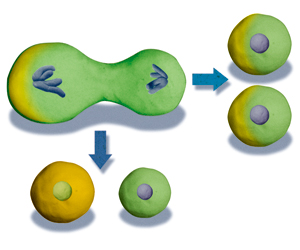

細胞分裂
這是一個視覺化程式設計的學習任務，配合七年級下學期生物課，以「運算思維」為課
程設計核心，讓學習者透過 「細胞的分裂」過程進行樣式的辨識與模擬，實際展現細胞分裂的視覺化過程。透過此專題實作，學生能學習辨認生物樣式、實際設計動畫程式，同時能發揮個人創意，其成果可演繹成為教師和同學們實用又有趣的參考資源。
- 教學對象：
國中七年級生
- 學習表現：
資 t-IV-4 能應用運算思維解析問題。
資 p-IV-1 能選用適當的資訊科技組織思維，並進行有效的表達。
- 學習內容：
資 A-IV-1 演算法基本概念。
資 P-IV-2 結構化程式設計。
資 P-IV-5 模組化程式設計與問題解決實作。
- 運算思維：
Abstraction
Modeling
Pattern Recognition
